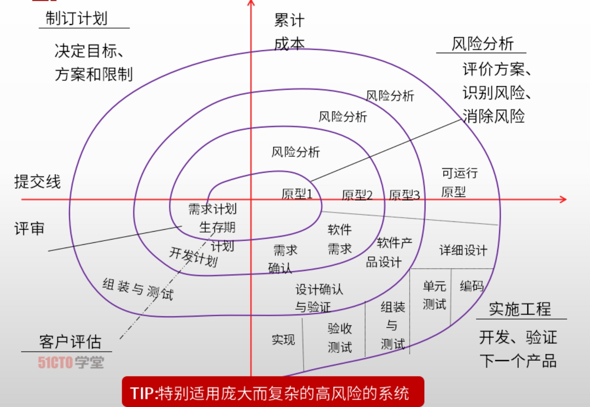
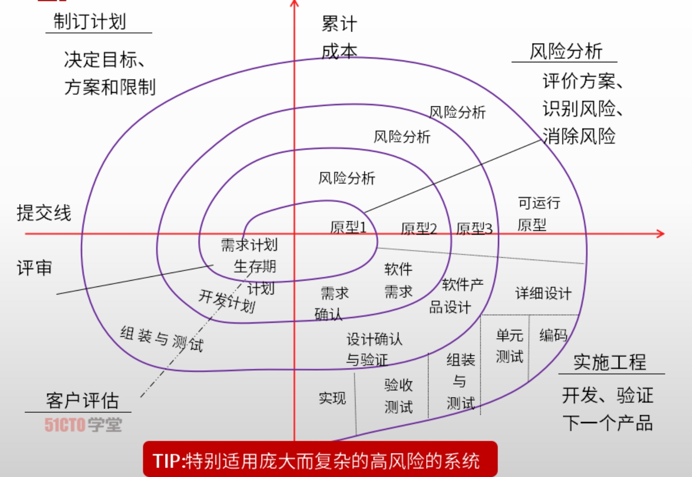
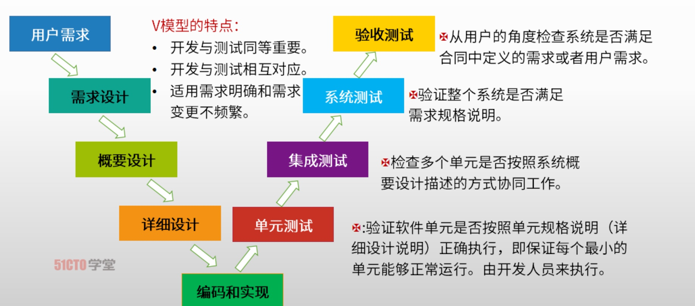
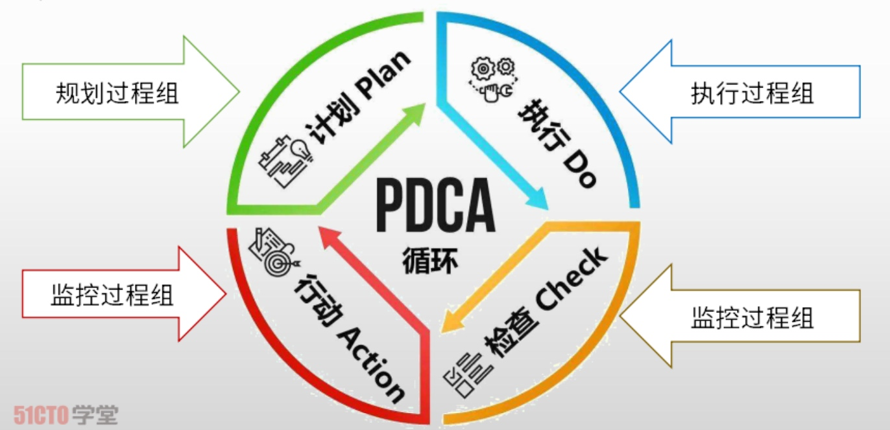
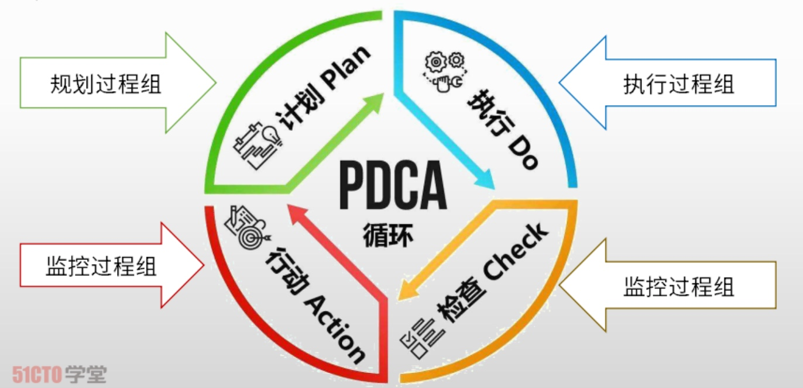

信息系统项目管理基础
4、信息系统项目管理基础
项目特点
1 | * 临时性 |
项目与日常运作的关系
| 不同点 | 项目 | 日常运作 |
|---|---|---|
| 目的 | 独特性 | 常规性、普遍性 |
| 责任人 | 项目经理 | 部门经理 |
| 持续时间 | 有限性 | 相对无限性 |
| 持续性 | 一次性 | 重复性 |
| 组织结构 | 项目组织 | 职能部门 |
| 考核指标 | 以目标为导向 | 效率和有效性 |
| 资源需求 | 多变性 | 稳定性 |
战略管理过程
1 | * 战略制定 |
组织结构
1 | * 职能型组织结构 |
信息系统项目典型生命周期模型
1 | * 瀑布模型 |
瀑布模型

螺旋模型
 

迭代模型

V模型

原型化模型

敏捷开发模型

PDCA戴明环
1 | * PLAN 计划 |
 

本博客所有文章除特别声明外，均采用 CC BY-NC-SA 4.0 许可协议。转载请注明来自 East'blog！